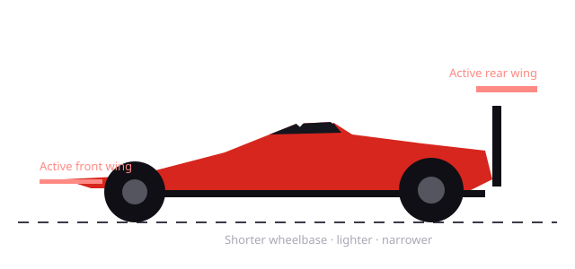
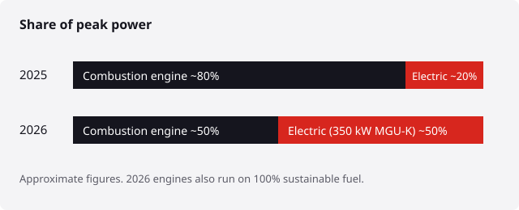
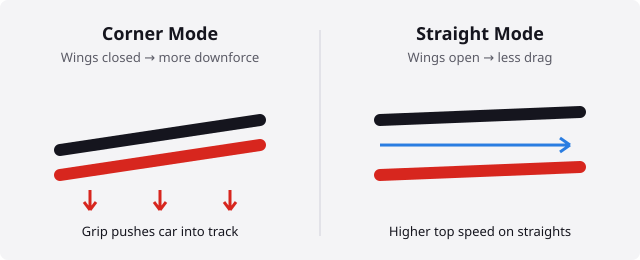

Beginner's guide · Updated November 2026
F1 2026 Rules Explained: A Beginner's Guide to the New Era of Formula 1
Formula 1 rebuilt its cars from scratch for 2026. No more DRS, a battery that does almost half the work, and wings that move on every straight. This guide explains what changed and how to follow a race, with no jargon.
Read the 2026 rules →
What is Formula 1?
Formula 1 (F1) is the top level of single-seater motor racing, run by the FIA. In 2026 the grid has 11 teams and 22 drivers, racing across a calendar of Grands Prix on five continents. Each team builds its own car, so F1 is a competition between engineers as much as between drivers.
There are two titles every year: the Drivers' Championship for the individual and the Constructors' Championship for the team, which adds up both of its drivers' points.
The F1 2026 rules: what changed?
2026 is the biggest reset of F1's rules in more than a decade. The changes fall into three groups: the engine, the aerodynamics and the car's size.
1. A new 50/50 hybrid power unit
The engine is still a 1.6-litre turbo V6, but the electric side is now far stronger. The motor that recovers and deploys energy (the MGU-K) now produces 350 kW, about three times more than before, so power is split roughly half from fuel and half from the battery. The complex MGU-H unit has been removed, and the engines run on 100% sustainable fuel.

2. Active aero replaces DRS
The Drag Reduction System (DRS) is gone. Instead, every car has moving front and rear wings with two settings:
- Corner Mode — wings closed for maximum downforce and grip through corners.
- Straight Mode — wings open to cut drag and raise top speed on straights. Unlike DRS, every driver can use it, not just the chasing car.

3. Overtake Mode and the Boost button
To help overtaking, a driver who is within one second of the car ahead at the detection point gets Overtake Mode: an extra 0.5 MJ of electrical energy to use on the next lap. A separate Boost button lets any driver spend battery energy to attack or defend. Managing the battery is now a big part of racecraft.
4. Smaller, lighter cars
| Spec | 2025 | 2026 |
|---|---|---|
| Minimum weight | 800 kg | 768 kg |
| Maximum wheelbase | 3,600 mm | 3,400 mm |
| Width | 2,000 mm | 1,900 mm |
| Overtaking aid | DRS | Overtake Mode |
How an F1 race weekend works
- Practice (Friday–Saturday): up to three sessions for teams to tune the car.
- Qualifying (Saturday): three knockout rounds (Q1, Q2, Q3). The fastest driver in Q3 takes pole position.
- The Grand Prix (Sunday): about 305 km, usually with at least one pit stop to change tyres.
Some weekends are Sprint weekends, with a short Saturday race that awards points to the top eight.
The F1 points system
Points go to the top ten finishers in every Grand Prix. There is no longer a bonus point for the fastest lap.
| Position | 1st | 2nd | 3rd | 4th | 5th | 6th | 7th | 8th | 9th | 10th |
|---|---|---|---|---|---|---|---|---|---|---|
| Points | 25 | 18 | 15 | 12 | 10 | 8 | 6 | 4 | 2 | 1 |
The 2026 season so far
Mercedes adapted best to the new rules. Kimi Antonelli clinched the 2026 Drivers' Championship at the Mexico City Grand Prix, becoming the youngest world champion in F1 history. Watch the final races to see how the new active aero and Overtake Mode play out in close battles.
For live standings, see the official F1 results page.
Frequently asked questions
Does F1 still use DRS in 2026?
No. DRS was replaced by active aero (Straight Mode and Corner Mode) and Overtake Mode.
How many teams are in F1 in 2026?
11 teams and 22 cars. Cadillac is the new 11th team, and Audi has taken over the former Sauber team.
How many points does an F1 race winner get?
25 points. The top ten score 25, 18, 15, 12, 10, 8, 6, 4, 2 and 1.
Is F1 easy to follow for beginners?
Yes, once you know the basics on this page. Start by following one driver and one team, and watch qualifying as well as the race.